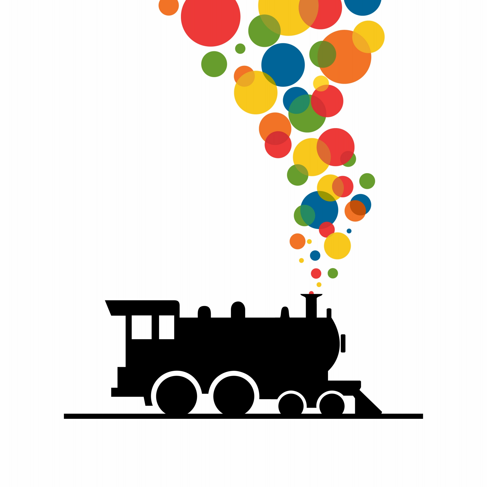

<ion-content padding>

	<ion-text color="dark shade">
	  <h1>Bart</h1>
	</ion-text>
    <ion-thumbnail>
	  
	</ion-thumbnail>

	<ion-list>
	  <ion-item>
	    <ion-label>Source</ion-label>
	    <ion-select placeholder="Select One" [(ngModel)]="stationsSelected.source">
	      <ion-select-option [value]="stationItem" *ngFor="let stationItem of stations.station">{{ stationItem.name }}</ion-select-option>
	    </ion-select>
	  </ion-item>
	  <ion-item>
	    <ion-label>Destination</ion-label>
	    <ion-select placeholder="Select One" [(ngModel)]="stationsSelected.destination">
	      <ion-select-option [value]="stationItem" *ngFor="let stationItem of stations.station">{{ stationItem.name }}</ion-select-option>
	    </ion-select>
	  </ion-item>
	  <ion-button color="secondary shade" expand="block" shape="round" [href]="'/trips/' + stationsSelected.source.abbr + '/' + stationsSelected.destination.abbr" routerDirection="forward">
		  <ion-ripple-effect></ion-ripple-effect>
		  Find Trains
	  </ion-button>
	</ion-list>

</ion-content>
